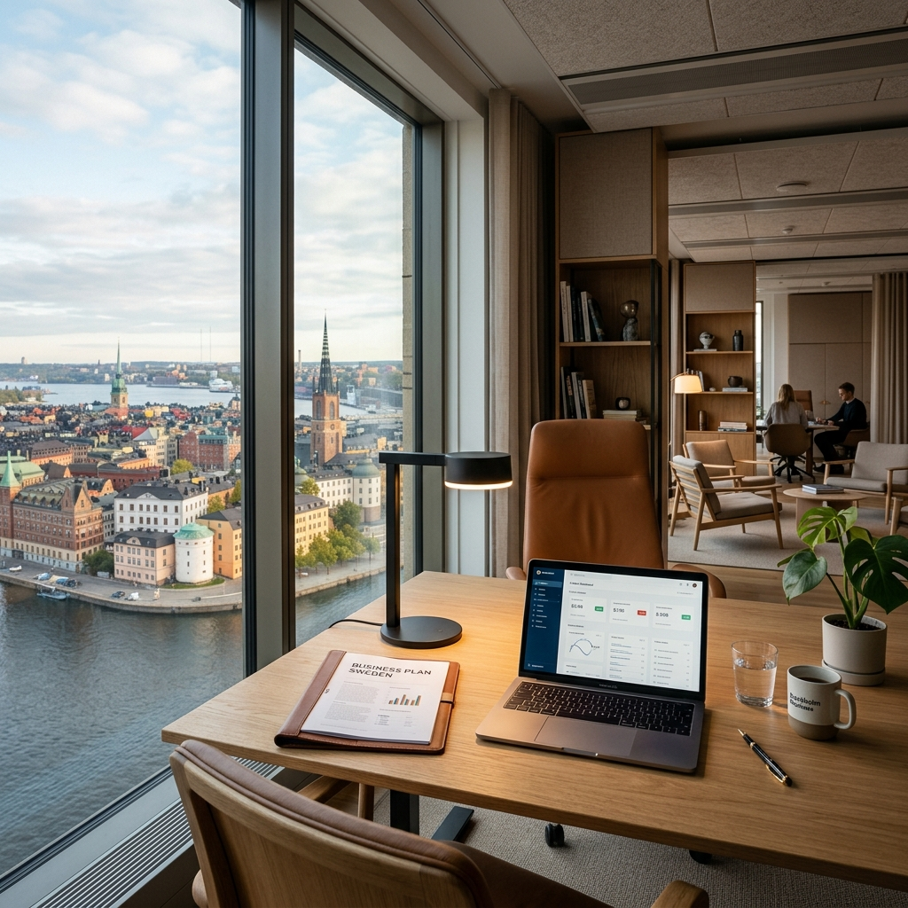

İsveç'te Şirket Açmak: 2026 Girişimci Rehberi

İsveç'te İşinizi Kurmaya Bugün Başlayın
Karmaşık bürokratik süreçleri uzmanlarımıza bırakın, siz işinize odaklanın.
Ücretsiz Ön Görüşme Randevusu Alınİsveç, şeffaf yönetimi, düşük yolsuzluk oranı ve dünya standartlarındaki dijital altyapısı ile global girişimciler için bir cennet niteliğindedir. İsveç'te şirket açmak, sadece yerel pazara değil, tüm Avrupa Birliği pazarına kapı açan stratejik bir adımdır. Bu rehberde, 2026 yılı güncel verileriyle adım adım kurulum sürecini ve dikkat etmeniz gereken kritik noktaları inceleyeceğiz.
Neden İsveç'te Şirket Kurmalısınız?
İsveç, Forbes tarafından defalarca "İş Yapmak İçin En İyi Ülkeler" listesinde ilk sıralarda yer almıştır. İşte temel nedenler:
- Dijitalleşme: Banka hesaplarından vergi beyannamelerine kadar her şey dijitaldir (BankID sistemi).
- İnovasyon: Stockholm, kişi başına düşen "Unicorn" (1 milyar dolar değerindeki girişim) sayısında Silikon Vadisi'nden sonra dünyada ikincidir.
- Güven: İş kültüründe "güven" esastır; bürokrasi şeffaf ve tahmin edilebilirdir.
1. Adım: Doğru Şirket Türünü Seçin
İsveç'te iş kurarken yapacağınız en kritik tercih şirket türüdür. 2026 itibarıyla en çok tercih edilen yapılar şunlardır:
Aktiebolag (AB) - Limited Şirket
En profesyonel yapıdır. Hissedarların sorumluluğu yatırdıkları sermaye ile sınırlıdır. Minimum sermaye şartı 25.000 SEK'tir. Ciddi büyüme hedefleri olan girişimciler için tek seçenek budur.
Enskild Firma - Şahıs Şirketi
Sermaye gerektirmez. Ancak şirket borçlarından şahsi mal varlığınızla sorumlu olursunuz. Genellikle İsveç'te ikamet eden freelancer'lar için uygundur.
Hangi Şirket Türü Size Uygun?
Vergi avantajları ve hukuki sorumluluklar açısından size en uygun yapıyı birlikte belirleyelim.
Uzmanımıza Danışın2. Adım: İsim Tescili ve Bolagsverket Kaydı
Şirket isminiz İsveç Şirketler Kayıt Ofisi (Bolagsverket) tarafından onaylanmalıdır. İsmin özgün olması ve sektörü yanıltmaması gerekir. Kayıt ücreti genellikle dijital başvurularda 1.900 SEK - 2.500 SEK arasındadır.
3. Adım: Vergi Kayıtları (F-skatt ve KDV)
İsveç Vergi Dairesi (Skatteverket) başvurusu, operasyonun can damarıdır. "F-skatt" onayı almanız, müşterilerinizin size ödeme yaparken vergi kesintisi yapmaması anlamına gelir. Ayrıca yıllık cirosu 80.000 SEK'i aşan her işletme KDV (Moms) kaydı yaptırmalıdır.
4. Adım: Banka Hesabı ve Sermaye Yatırımı
AB kurulumu için sermayenin bir İsveç bankasına yatırılması ve bankadan "Sermaye Belgesi" alınması şarttır. Yabancı girişimciler için en zorlayıcı adım budur; bankalar "Müşterini Tanı" (KYC) protokolleri gereği çok detaylı sorular sormaktadır.
Yabancılar İçin Girişimci Oturum İzni (D-Vizesi)
Eğer İsveç dışından geliyorsanız, şirketinizi bizzat yönetmek için oturum iznine ihtiyacınız vardır. Migrationsverket şu kriterlere bakar:
- İlgili sektörde kanıtlanmış tecrübe.
- Detaylı ve gerçekçi bir 2 yıllık iş planı.
- Kendi geçiminizi (ve varsa ailenizi) sağlayacak finansal kaynak (Genellikle kişi başı yıllık 200.000 SEK+).
2026 Maliyet Tablosu (Tahmini)
| Kalem | Maliyet (SEK) |
|---|---|
| Minimum Sermaye (AB için) | 25.000 SEK |
| Bolagsverket Kayıt Ücreti | 2.200 SEK |
| Hukuki Danışmanlık ve İş Planı | 10.000 - 20.000 SEK |
| Toplam Başlangıç | ~37.200 SEK+ |
Hayallerinizi Ertelemeyin
İsveç'te şirket açmak, doğru rehberlik ile sanıldığından çok daha kolaydır. Ekibimiz yüzlerce girişimciye bu yolda eşlik etti.